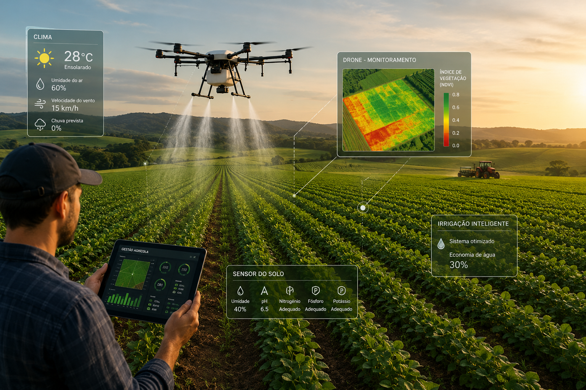

1. Investigar
A gente corre atrás de um problema de verdade: seja o desperdício de água, a saúde do solo, alimentos saudáveis ou como a tecnologia ajuda a cuidar dos ecossistemas locais.
Entendendo o Projeto
O Concurso Agrinho é o projeto prático mais legal que a gente recebeu no ano. Ele funciona como um empurrãozinho que o Sistema FAEP/SENAR-PR e a Secretaria de Educação dão para escolas de todo o Paraná. Em vez de só decorar fórmulas, a gente usa a cabeça para entender como a vida na cidade depende totalmente do campo, focando em inovação e respeito ao meio ambiente.
Quando o professor trouxe a proposta do Agrinho para a nossa turma, todo mundo achou que seria só mais um trabalho valendo nota, mas a verdade é que o projeto fez a gente enxergar as coisas de um jeito bem diferente. O que a gente aprendeu sobre isso nas últimas semanas vai muito além de ler capítulos de livros didáticos. A gente começou a perceber que o campo não é só aquele lugar distante onde tem mato e animais; ele é o motor do nosso estado, o lugar de onde vem nossa comida, nossa tecnologia de ponta e as principais respostas para combater a crise climática que a gente tanto vê nos jornais.
Estudar o Agrinho fez a nossa turma discutir sobre como a rotação de culturas protege o solo e como a tecnologia de drones ajuda a economizar água nas plantações. Isso é importante no nosso dia a dia porque nós somos a geração que vai herdar esses problemas se ninguém fizer nada agora. Quando a gente debate esses temas na escola, começamos a entender o valor de consumir as coisas de forma consciente e a respeitar o trabalho dos produtores rurais.
O resumo do que foi estudado até aqui mostra que a escola ganha vida quando se conecta com a comunidade real. A gente percebeu que a nossa rotina na cidade está totalmente amarrada com as decisões que as pessoas tomam lá no interior do Paraná. No fim das contas, participar desse concurso ajuda a clarear nossa mente e mostra que qualquer estudante do ensino médio, usando as ferramentas certas, pode criar projetos que realmente mudam o pedaço de mundo onde vive. É o nosso conhecimento saindo do caderno e indo direto para a prática.
Nossas Opções
Neste ano de 2026, a nossa rede estadual liberou várias categorias para cada tipo de talento. Dá para participar escrevendo, desenhando, mandando bem no inglês ou quebrando a cabeça na robótica e na programação!
A gente corre atrás de um problema de verdade: seja o desperdício de água, a saúde do solo, alimentos saudáveis ou como a tecnologia ajuda a cuidar dos ecossistemas locais.
A nossa criatividade entra em ação e o projeto vira uma redação, uma obra de arte, um protótipo físico ou até um site e aplicativo feito inteiramente por nós.
Hora de mostrar o resultado! A gente espalha nossa ideia para todos os alunos da escola, leva para debate em casa com os pais e apresenta para os avaliadores.
Analisando as regras e as categorias do Agrinho 2026, nossa turma percebeu que o concurso foi feito sob medida para não deixar ninguém de fora. O que a gente achou mais massa foi esse leque de opções que abre espaço para todo mundo brilhar, independente de qual seja a sua matéria favorita. Se você é aquela pessoa que vive escrevendo histórias ou redações nota mil, tem a categoria perfeita para você colocar seus argumentos no papel. Se você prefere a parte visual e passa o dia desenhando nas bordas do caderno, dá para criar artes incríveis que explicam a sustentabilidade sem precisar usar nenhuma palavra.
Mas o que explodiu a cabeça da galera foi ver a robótica e a programação nessa lista. Quem diria que programar linhas de código ou montar circuitos elétricos na escola faria parte de um projeto sobre o campo? Isso é bizarramente importante no nosso cotidiano porque mostra que o agro moderno não funciona mais como antigamente. Hoje, o campo precisa de automação, softwares de previsão do tempo e sistemas inteligentes para evitar o desperdício de insumos.
Em resumo, o que a gente tirou de lição ao estudar essas categorias é que para resolver problemas gigantescos, como a segurança alimentar e a preservação ambiental, a gente precisa unir forças de todas as áreas. Não adianta ter só o cientista ou só o agricultor; a gente precisa do programador criando o app, do comunicador explicando a ideia e do artista engajando as pessoas. Ver a escola inteira se mobilizando — cada aluno escolhendo a categoria que mais tem a ver com a sua própria personalidade — dá a maior sensação de que estamos construindo algo coletivo de verdade.

Por que vale a pena
Estudar sobre um campo forte e sustentável faz a gente tirar as teorias do caderno e transformá-las em atitude. A nossa conclusão é direta: o futuro só funciona se a gente aprender a cuidar das pessoas e do planeta ao mesmo tempo.
Parar para pensar no impacto de tudo isso fez a gente questionar o papel da própria escola na nossa vida. Afinal, por que tudo isso importa tanto? A resposta que a nossa turma encontrou é que o Agrinho funciona como uma ponte entre o que os professores explicam no quadro negro e o mundo real que está acontecendo lá fora. Quando a gente estuda química, biologia ou geografia de forma isolada, às vezes parece que aquelas matérias não servem para muita coisa no nosso dia a dia. Mas quando a gente aplica tudo isso junto para entender a conservação de uma bacia hidrográfica ou o manejo correto da terra, a chave vira na nossa cabeça.
Isso muda completamente a nossa postura como cidadãos e estudantes. A gente deixa de ser apenas espectadores que assistem às notícias ruins na televisão e passa a ser o grupo de jovens que está ativamente propondo caminhos para o Paraná se desenvolver sem destruir suas florestas e rios. Esse aprendizado mexe com a nossa rotina porque a gente começa a cobrar atitudes sustentáveis dentro da nossa própria casa, reduzindo o desperdício, reciclando o lixo e valorizando os produtos locais que compramos na feira do bairro.
Resumindo o que discutimos em sala, esse projeto prepara a gente para sermos os profissionais conscientes de amanhã, não importa se vamos trabalhar na roça, num escritório no centro da cidade ou desenvolvendo jogos de computador. A grande lição é que o progresso econômico não serve para nada se ele deixar um rastro de destruição para trás. O Agrinho carimbou na nossa mente que o futuro sustentável não é uma utopia distante, mas sim uma colheita que depende das sementes que estamos plantando agora em cada um desses trabalhos escolares.
De Onde Tiramos Tudo